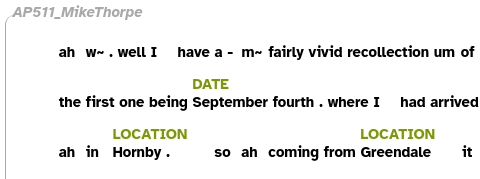
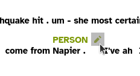
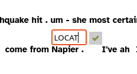
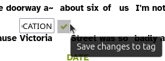

Named Entity Recognition
Depending on the language of your transcripts, you may be able to automatically tag dates and names of people, places and organisations, using the Stanford Named Entity Recognizer (NER).
The Stanford NER has recognizers for:
- Arabic
- Chinese
- English
- French
- German
- Hungarian
- Italian
- Spanish
| Entities: | PERSON | PERSON | LOCATION | DATE | ||||||||
|---|---|---|---|---|---|---|---|---|---|---|---|---|
| Words: | President | Barack | Obama | was | born | in | Hawaii. | He | was | elected | in | 2008. |
Several classifiers for English are included in the default installation. You can download classifiers for other languages from the Stanford CoreNLP site.
Different classifiers include different possible entity labels:
- 3 class : LOCATION, PERSON, ORGANIZATION
- 4 class : LOCATION, PERSON, ORGANIZATION, MISC
- 7 class : LOCATION, PERSON, ORGANIZATION, MONEY, PERCENT, DATE, TIME
The steps for Named Entity tagging your corpus are:
- Install the Layer Manager
- Configure a Named Entity layer
Install the Layer Manager
- In LaBB-CAT, select the layer managers option on the menu at the top.
- At the bottom, follow the link labelled: List of layer managers that are not yet installed.
- Find the StanfordNERecognizer layer manager in the list, and press its Install button, then Install again.
You will see a configuration page with some information about the tagger, and an option to upload a tagger file, which we don’t need to do. - Press Configure.
You will see a progress bar while the layer manager downloads the Stanford POS Tagger files.
Once it’s finished, you’ll see a further information page.
Create a Named Entity layer
Now the layer manager is installed, we need to create a layer that is configured to use it to tag words that are names of entitities…
- Select word layers on the menu at the top.
- You will see a list of word tag layers that have already been configured. The column headings at the top are also a form for creating a new layer, so we’ll fill in that form now.
- Fill in the following details on the form at the top:
- Layer ID:
namedEntity1 - Type: Text
- Alignment: None
- Manager: Stanford Named Entity Recognizer
- Generate: Always
- Project: This can be left as the default value, unless you want to add the layer to a category of your choice.
- Layer ID:
- Press New
You will see the layer configuration form. Mostly you can leave the default values as they are. - By default, the Classifier to use options are all for English data; you can choose whether 3, 4, or 7 types of entities are tagged.
If your data is not in English, you can download a recognizer for your language from the Stanford CoreNLP website
To install a classifier:
- Download the corresponding files from the CoreNLP website
- In the layer configuration form, set Classifier to use to
[other classifier]
You will be asked to select a file. - Select the file you just downloaded.
After a short delay while the file is uploaded, you’ll see a message saying “Classifier(s) installed.” - In the layer configuration form, you can now set Classifier to use to the classifier you just installed.
- Press Set Parameters.
- Now press Regenerate to run the Named Entity Recognizer on your whole corpus.
You will see a progress bar while the transcripts are being tagged. - Once it’s complete, select the transcripts option on the menu, and click the first transcript in the list.
- Tick the new namedEntity layer to display the tags.
You will see that some words have a tag above them - these identify the type of named entity found by the classifier.

Editing tags
The NER tags can be manually corrected if required.
To change the label of a tag on the transcript page:
- Hover the mouse over the tag you want to change.
An ‘edit’ button will appear to the right.
 - Press the edit button.
The tag will become a text box you can type in.
 - Change the tag’s label as desired.
- Press then save button to save your changes.
You will see a message asking “Are you sure you want to save this tag?” - Press OK to confirm your change.
To delete a tag, follow the steps to change the label, and set the label to be blank before saving.
To add a new tag for a word that the NER has not recognized:
- Hover the mouse in the space above the word you want tag, where the tag would be if it had been recognized.
An ‘add tag’ button will appear.

- Press the ‘add tag’ button.
An empty text box will appear.

- Type in the desired label.
 - Press the save button to save your changes.
You will see a message asking “Are you sure you want to create this tag?” - Press OK to confirm your change.
If you manually add or edit Named Entity tags, and then run the StanforNER again, the manual changes will be preserved, although the tagger will re-create deleted entity tags.
Footnotes
There may already a layer called
entityin your LaBB-CAT configuration under phrase layers, so if you want to call this layerentity, you will have to delete the phrase layer first.↩︎